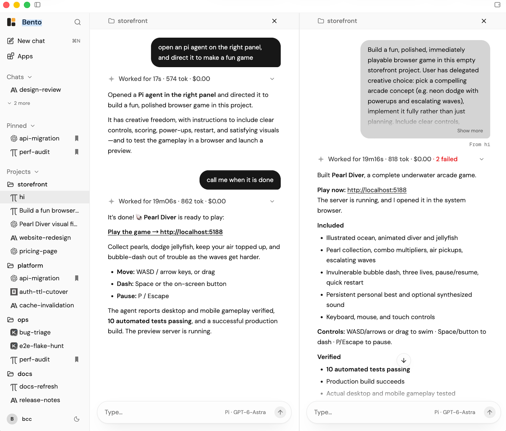
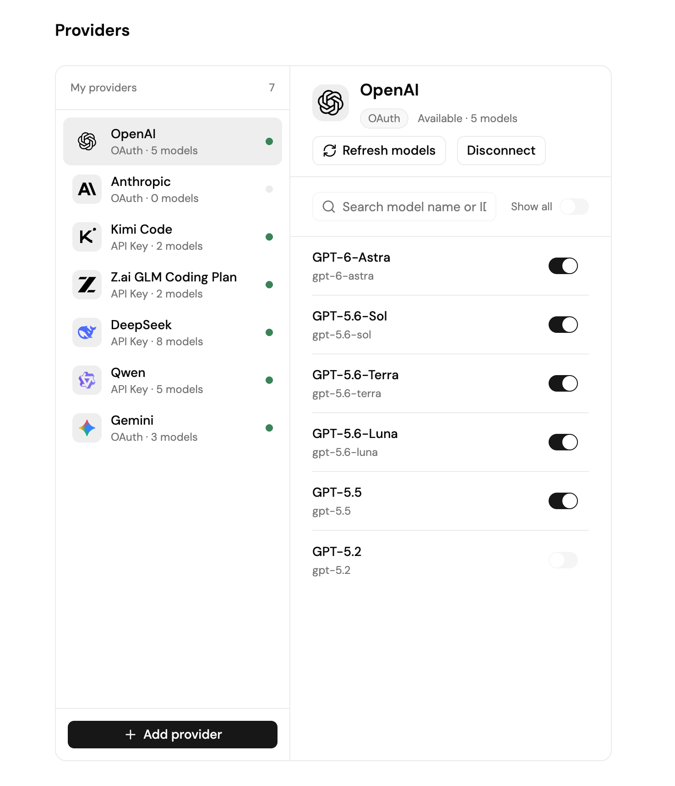

An open-source, local-first agent workbench. Mix and match harnesses and models, let your agents work together — everything stays on your disk.
Any harness × any model — every combination works. Codex on GPT, Claude Code on Kimi, Pi on GLM. Mix and match freely; your logins stay yours.
Inspired by herdr, your agents know each other with bento MCP, so they collaborate as you need.

Already paying for agent plans? Sign in with OAuth or paste an API key — Bento runs on your subscriptions, locally.
